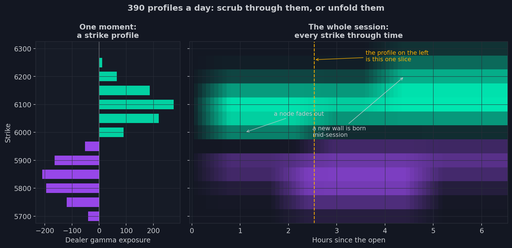
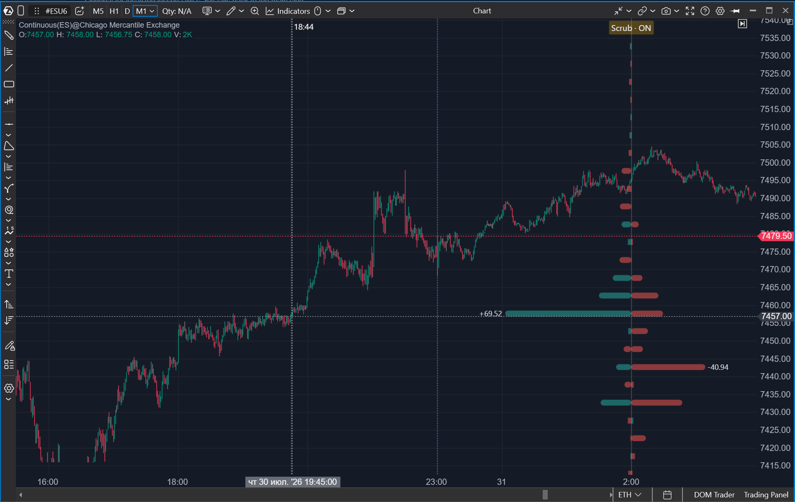
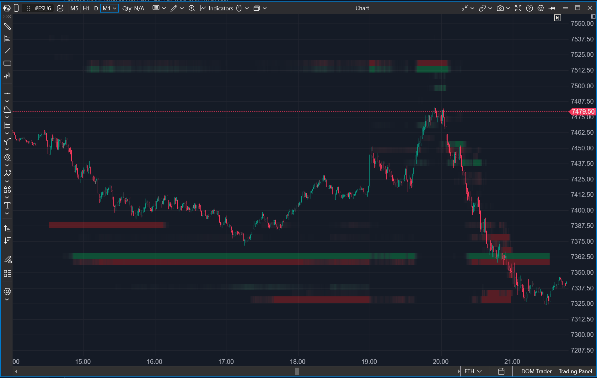
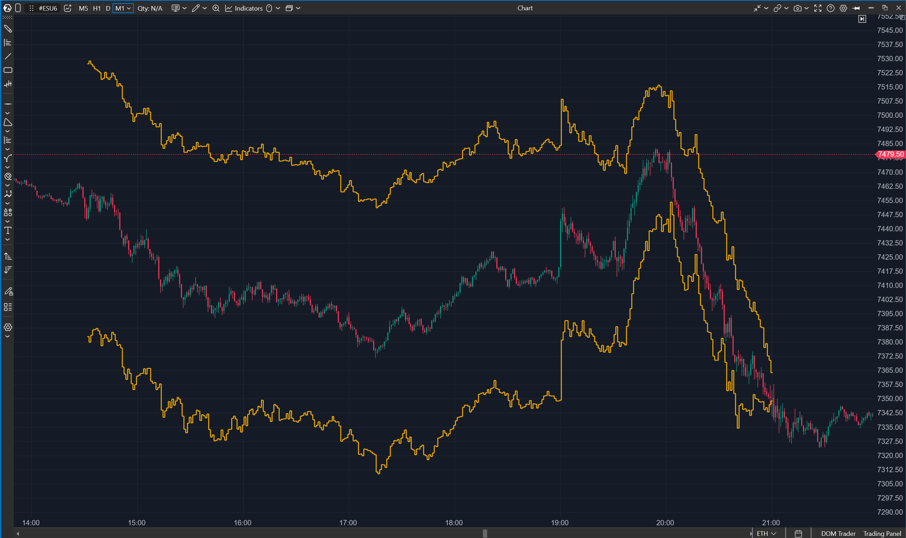

12. Indicadores de strikes: mapas de fuerzas en el gráfico
En la primera era había un perfil de posicionamiento por día — la tabla matinal de
la lección 5. El feed por minutos produce un perfil así cada minuto: unos
trescientos noventa por sesión. Surge una pregunta que antes no existía: ¿cómo se
mira siquiera algo así?
Hay dos respuestas, y son los dos indicadores de esta lección. Puedes hojear los
perfiles como fotogramas de una película — así funciona Options Strike Profile. O
puedes desenrollar la cinta entera en una sola pantalla, convirtiendo el tiempo en
un eje — eso es Options X-Ray: Strike Heatmap. Un tercer indicador — Options
X-Ray: Expected Move — hace con las expectativas del mercado lo que los dos
primeros hacen con las posiciones: las obliga a actualizarse minuto a minuto.

Options X-Ray: Strike Profile — un perfil con máquina del tiempo
Por fuera — el perfil conocido de la lección 5, en el borde del gráfico: barras
por strike, calls y puts, walls. Por dentro — otro mundo. Primero, los datos: no
el OI diario con suposiciones, sino las posiciones por minuto del feed, con el
libro del MM calculado con exactitud. Segundo, la elección de métrica: el mismo
indicador muestra el perfil de la exposición gamma de los MM (el modo por
defecto), su delta, vanna o charm — los cuatro mapas de fuerzas de la lección 9 —
además de la exposición delta de cualquier cohorte de clientes: retail, los pros,
firmas, brokers o todos los clientes juntos. Las unidades son las mismas que en
todo el paquete: exposición delta en equivalente ES de la lección 10, sin recuentos
de contratos en ninguna parte.
Un ajuste aparte elige qué vencimientos mostrar, y merece una mirada atenta:
ahí vive el ciclo semanal alrededor del cual gira el trabajo de un trader de 0DTE.
Las cestas son de dos tipos. Las series individuales contienen exactamente un
vencimiento, elegido por identidad exacta: 0DTE (vence hoy, el valor por defecto —
es la serie que mantiene su masa cerca del precio), el próximo vencimiento y
luego E+2, E+3 y E+4 — la segunda, tercera y cuarta fecha futura. Esas tres
últimas son la semana desglosada por días: el lunes son el miércoles, el jueves y
el viernes; el martes la ventana se desliza una posición, y así sucesivamente. Al
mismo tipo pertenecen OPEX (monthly) — la serie mensual viva más cercana de la
lección 2, las reservas más pesadas del mercado en una vista propia — y End of
month, el último vencimiento del mes de calendario, tras el cual el
posicionamiento se recarga desde cero.
Las cestas de rango agregan varias series a la vez. "This week (to Friday)" es
todo lo vivo hasta el viernes inclusive, con el día de hoy. "Rest of week
(E+1..Fri)" es lo mismo sin hoy: solo lo que sobrevive al cierre. Un viernes
esa cesta está vacía, y esa es la respuesta correcta, no datos que faltan. Está
también el "within 7 days" rodante, que no respeta la frontera de la semana y un
jueves se mete en la siguiente, y el libro completo.
¿Por qué desglosar tan fino? Separar el 0DTE del resto de la semana separa la
especulación del posicionamiento: la serie de hoy desaparece por la tarde, todo lo
demás se queda. Cuando el 0DTE no va a ninguna parte mientras E+2 y E+3 crecen, el
mercado no está librando la batalla de hoy — está construyendo para mitad de
semana, y solo un desglose por días lo muestra. Las dos mitades cuadran con
exactitud: 0DTE más el resto de la semana es precisamente la semana entera.
Las cestas individuales se eligen por identidad exacta de la serie, hora de
vencimiento incluida, y eso tiene una consecuencia visible el día de OPEX. La
mañana del tercer viernes vencen hoy dos series: la mensual, que liquida a las
09:15, y la semanal, que liquida a las 16:00. La cesta 0DTE toma la viva más
cercana, así que hasta las 09:15 muestra el libro mensual — el que sostiene el pin
de la mañana — y cambia a la serie vespertina en cuanto la mensual liquida. El
perfil se reconstruye visiblemente en ese minuto: es un cambio de serie, no un
fallo. Por la misma razón, una serie muerta desaparece honestamente de las cestas
en lugar de quedarse colgada en ellas hasta la tarde.
Una última cosa sobre las cestas de rango: no llevan una identidad de vencimiento
única, así que la matemática que necesita una sola serie — el expected move más
adelante en esta lección, por ejemplo — no se calcula sobre ellas. Para eso están
las cestas individuales.
Y tercero — la máquina del tiempo, la diferencia principal con todo lo anterior.
Por defecto el perfil vive en el «ahora»: muestra el momento más fresco del libro
y no cambia al desplazar o hacer zoom en el gráfico. Pero un clic en el chip de la
franja enciende el scrub, y el perfil se ata a la vela bajo el cursor: pasa el
ratón por la historia y el perfil salta a ese momento. Las preguntas «cómo se veía
el mapa a las diez de la mañana» y «cómo estaba el mercado antes del arreón de
ayer» han dejado de ser retóricas: señala y mira. El tercer modo es el pin:
Ctrl+clic en una vela fija el perfil a ella (una marca discontinua en la vela, el
chip dice "Pinned · 13:35 ×" en hora del gráfico), otro Ctrl+clic mueve el pin, un
clic en el chip lo suelta. La pista está en el hover del chip.
El estilo de dibujo es configurable: el Net de dos lados — una barra por
strike, negativo a la izquierda, positivo a la derecha (el valor por defecto) —,
la clásica mariposa calls/puts, y el Net de un lado — cada barra desde el
borde a lo ancho de toda la franja, con el signo llevado solo por el color, la
silueta clásica del perfil a doble resolución.
Por separado se configura el layout: dónde vive el perfil y cuántos hay. Hay
cuatro modos. Panel vertical propio (el valor por defecto) — el histograma en
su propio panel junto a las velas; la escala de precios sigue compartida, los
niveles siguen alineándose con el gráfico. Overlay sobre el gráfico — el
perfil directamente encima de las velas, en el borde elegido. Y dos modos
multisesión — los mismos dos escenarios, pero con varios perfiles: la sesión
seleccionada junto a hasta cuatro anteriores (la cantidad es configurable), cada
una pasada como instantánea al cierre de su sesión. En el overlay cada perfil está
anclado a la vela del cierre de su sesión y se mueve con las velas a cualquier
zoom, y una columna nunca es más ancha que el espacio que su sesión ocupa en
pantalla. Las sesiones pasadas se desvanecen con la edad y van etiquetadas con su
fecha — y, cuando la serie negociada cambió, también con la fecha de vencimiento.
Todas las columnas comparten una sola escala de anchura, así que «el martes es la
mitad de fino que el lunes» es un hecho sobre el mercado, no sobre píxeles. Así la
trama semanal del posicionamiento — cómo se construyó el libro día a día — se ve
de un vistazo, sin hojear.

Pasar el cursor sobre una barra abre una tarjeta de strike en la gramática común
del paquete: calls a la izquierda, puts a la derecha — una «mariposa» con cuerpos
en colores long/short, una fila Standing para la exposición acumulada, una fila
Today para lo que la cohorte ha movido durante la sesión actual, y un veredicto en
color: "Net long/short here". La posición acumulada y el flujo fresco pueden
apuntar en direcciones opuestas — el retail descargando puts que compró hace
tiempo se ve exactamente así — y eso es una lectura por derecho propio.
En los modos multisesión la tarjeta funciona sobre cualquier columna: sobre la
sesión seleccionada — completa; las sesiones pasadas no tienen fila Today — son
instantáneas al cierre, y el subtítulo de la tarjeta nombra el momento con
honestidad («… · 18 Sep close»). La visualización de la tarjeta la gobierna un
ajuste de tres posiciones compartido por todo el paquete: apagado, encendido o
mientras se mantiene Ctrl — útil cuando quieres el mapa limpio y la tarjeta
bajo demanda. Y un último detalle: la línea de estado opcional etiqueta el perfil
brevemente, con la forma "GEX MM · bucket", y al pasar el cursor muestra la base
ES−SPX que proyecta los strikes sobre las velas del ES.
«¿Dónde está el open interest?»
Todo el que llega de un servicio de opciones clásico lo pregunta, así que vale la
pena decirlo sin rodeos. El perfil de strikes muestra no un recuento de
contratos, sino cuánto riesgo direccional hay en cada strike y de quién es. El
open interest es un contador que el trader multiplica de todos modos por las
griegas en su cabeza para deducir qué tendrán que cubrir los MM. Aquí la
multiplicación ya está hecha — y los lados de las operaciones no los adivina un
modelo: los etiqueta la bolsa.
Conviene conocer dos consecuencias de antemano. Primera: los números no van a
coincidir con los gráficos públicos de open interest, y no deben hacerlo. Un
strike lejano con un interés enorme pero una delta diminuta ocupa aquí poco
espacio precisamente porque apenas mueve la cobertura. Segunda: los cálculos
familiares sobre recuentos de contratos — max pain, los «muros de open interest» —
no se derivan directamente de este perfil; ese papel pertenece al perfil de
exposición gamma del nuevo paquete, que es su hogar más honesto, porque un muro va
de gamma y no de un número de contratos.
El open interest en sí también está en la suite — en el paquete de primera
generación (Options Chain) de la lección 6, sobre datos del conector del bróker
para opciones sobre futuros del CME. Simplemente, para el SPX intradía la bolsa
ofrece algo mejor, y el segundo paquete muestra eso en su lugar.
Options X-Ray: Strike Heatmap — toda la sesión de un vistazo
El scrub responde a la pregunta «qué había en ese momento». Pero una sesión tiene
una trama que solo se ve en conjunto: los nodos nacen, se endurecen, se derriten;
un muro que no estaba por la mañana se convierte para la hora de comer en el nivel
principal del día. Para eso el perfil se desenrolla en el tiempo: las velas del
gráfico corren por la horizontal, los strikes por la vertical, y cada strike se
convierte en un carril horizontal cuyo brillo es el tamaño de la exposición y cuyo
color es su signo.
La mitad derecha de la imagen de arriba es exactamente esta vista: carriles verdes
de gamma positiva, violetas de negativa, y la vida de los nodos expuesta a plena
vista. El conjunto de modos es el mismo que el del perfil: cuatro mapas de MM y la
exposición delta de las cohortes; el charm, como siempre, se dibuja en colores
directivos — el lado rojo es donde los MM tendrán que vender. La tarjeta de hover
es la misma que la del perfil: una mariposa CALLS|PUTS en la paleta de la métrica
elegida y un veredicto en color sobre qué hace este nodo con el precio.
Un detalle que importa para la lectura: el brillo se normaliza dentro de la
sesión, por separado para el lado positivo y el negativo. Un nivel fuerte, por
tanto, sigue siendo un carril visible todo el día — del nacimiento a la muerte —
en lugar de apagarse cuando el precio se aleja de él; y por la misma razón el
brillo es comparable dentro de un día, pero no entre días.

Options X-Ray: Expected Move — expectativas que respiran
El tercer indicador devuelve el corredor de expected move conocido de la lección
6 — pero ahora la volatilidad implícita se deriva de los datos por minuto del SPX,
y el corredor se recalcula con ella. Las expectativas de la mañana, la calma del
mediodía, los nervios ante los datos macro — la anchura del corredor vive dentro
del día, y eso es un indicador en sí mismo: el mercado ensancha el corredor antes
de las noticias y lo estruja después — delante de tus ojos. La serie se elige en
los ajustes: 0DTE — expectativas hasta el cierre de hoy, Next expiry — hasta el
próximo vencimiento. El horizonte sale de la identidad exacta de la serie, hasta
la hora del día: 16:00 para las weeklies, 09:15 para las mensuales matutinas,
13:00 en los días recortados previos a festivos — para que la fórmula σ√T reciba
el tiempo restante verdadero, no la suposición de que todo vence por la tarde.

La lectura es la misma de antes: los límites son un marco de normalidad, y un
movimiento más allá de ellos, un evento. La diferencia es la frescura: el marco de
la primera era se dibujaba con los datos de la mañana; este, con datos de hace un
minuto.
Todo lo de esta lección sigue siendo lógica de strikes: fuerzas desplegadas por
niveles. Para la mayoría de las tareas basta. Pero el propio planteamiento «una
fuerza en un strike» esconde una simplificación, y para verla hazle al mapa una
pregunta que no responde: «¿y qué pasa si el precio llega hasta allí dentro de dos
horas?» El libro del MM tiene una respuesta — pero no vive en las líneas rectas de
los niveles. La próxima lección va de superficies.
- El feed por minutos produce ~390 perfiles por sesión: Strike Profile puede hojearlos con el scrub por la historia y poner hasta cinco sesiones lado a lado (multisesión); Strike Heatmap los desenrolla todos a la vez en el tiempo.
- Las tarjetas de hover de todos los indicadores del paquete tienen tres modos de visualización: apagado, encendido, mientras se mantiene Ctrl.
- Ambos indicadores muestran los cuatro mapas de MM (gamma, delta, vanna, charm) y la exposición delta de cualquier cohorte de clientes — en equivalente ES, como todo el paquete.
- Las escalas de los mapas son solo de dos lados: −100 y +100 son regímenes opuestos, no «igual de mucho».
- Options X-Ray: Expected Move recalcula el corredor de expectativas minuto a minuto — para 0DTE o el próximo vencimiento; la anchura del corredor es un indicador en sí misma.